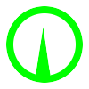

Cannon
Las mentes que están llenas de inteligencia kinestésica se materializan en ésta clase,
que les aporta la fuerza y velocidad que tenían en el mundo real.
La clase Cannon es la clase agresiva por excelencia, porque es precisamente lo que
mejor hacen; cargar y golpear repetidamente.
Empujan a todo enemigo o objeto que tocan, pueden ser defensivos y empujar a los carceleros para
que no alcancen a compañeros en apuros, o agresivos y empujar objetos para conseguir daños gratis
contra el equipo rival antes de arrasar.
Wheel
Las batallas son dominadas por la fuerza bruta, pero las victorias las suelen ganar inteligencias lógico-matemáticas,
que son capaces de decidir qué recibe daño, qué no, quién ocupa esa posición, quién no.
Las clases Wheel se abstraen del fragor de la batalla y se ponen a pensar cómo utilizar los
recursos de su equipo, y cómo utilizar los recursos de sus enemigos en su propia contra.
Escurridizos, pueden caminar entre los bordes del mapa, con lo que es fácil meterse
tras las líneas enemigas e inhabilitar al enemigo más problemático del equipo, o simplemente salvarse de una muerte segura.


Trench
Líderes naturales, las inteligencias colaborativas, pese a no conservar recuerdos de sus actividades en el mundo real, sienten la necesidad
de planificar el siguiente paso a seguir del grupo, y de coordinar sus esfuerzos para llegar a la victoria.
Las clases Trench pueden disparar desde lejos, mientras son útiles al resto del equipo con sus distintas habilidades de soporte,
por lo que van a ser la piedra angular del equipo de cualquier manera.
Pueden perforar objetos, bien para volar coberturas o máquinas enemigas, o bien para perforar paredes y crear rutas de escape para su equipo
si las cosas se ponen feas y desviar la atención del Carcelero hacia el equipo enemigo.